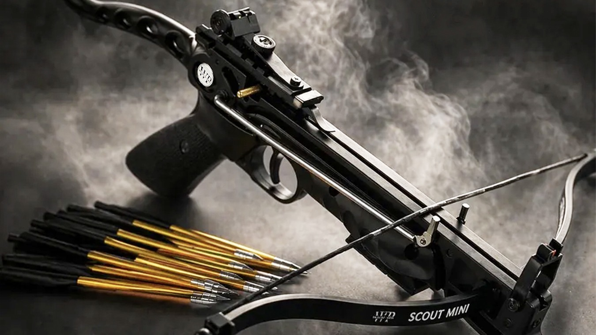
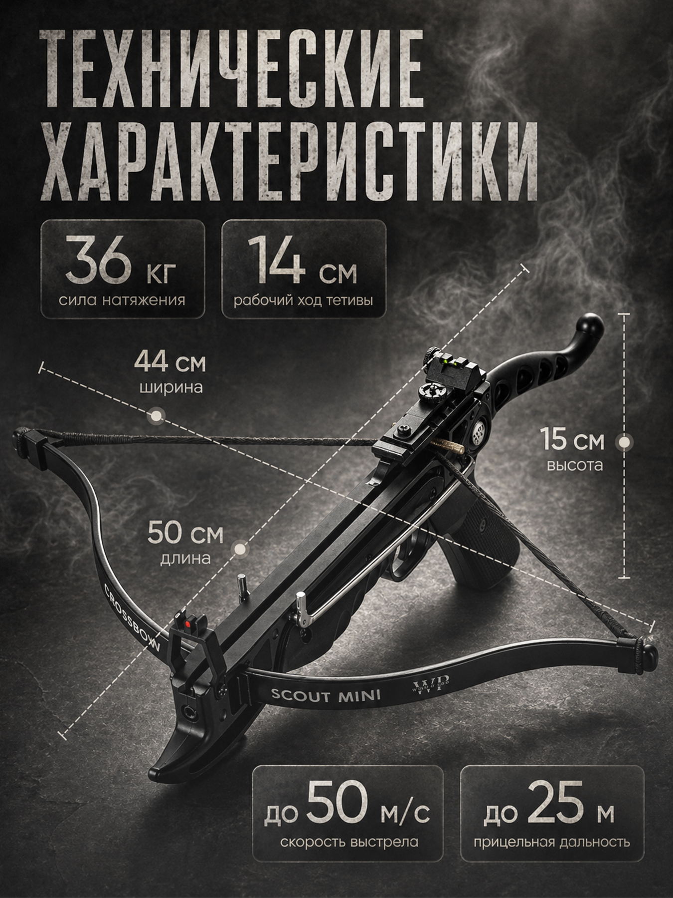
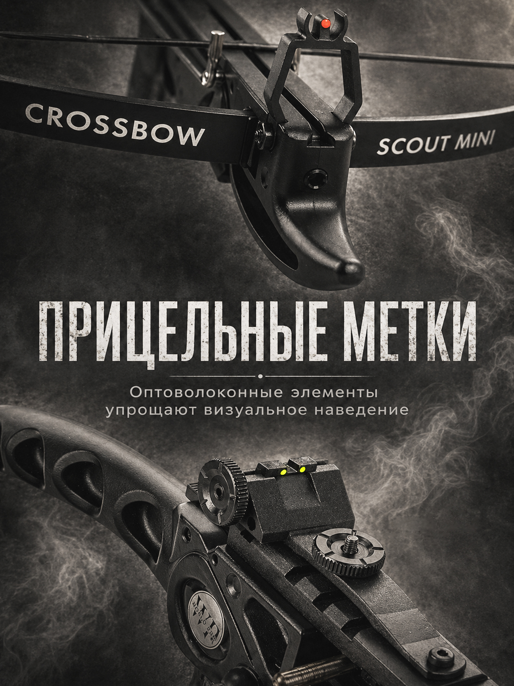
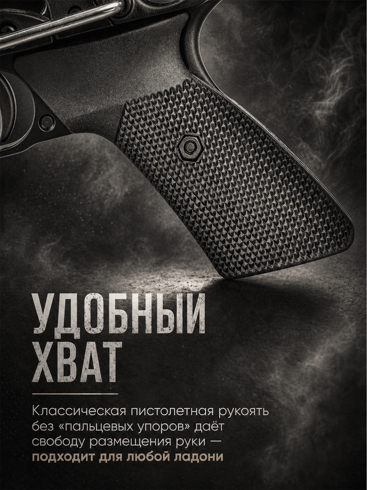
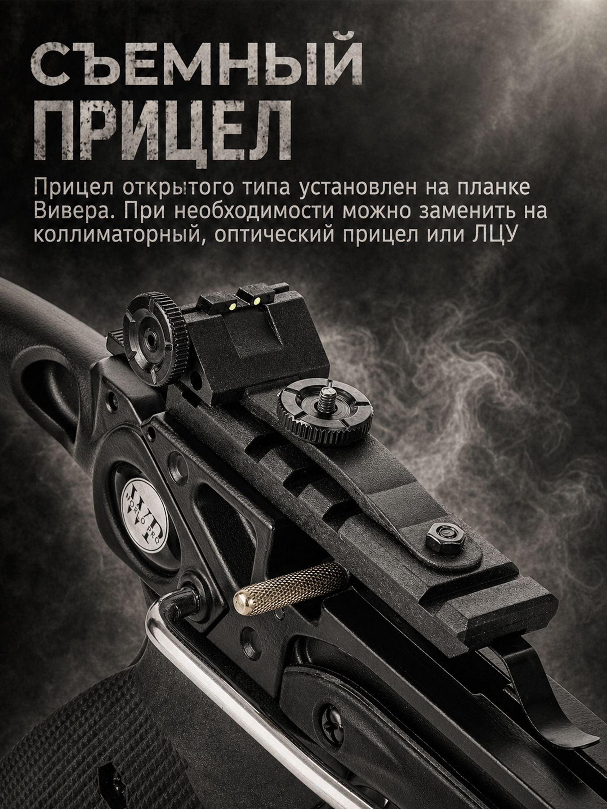
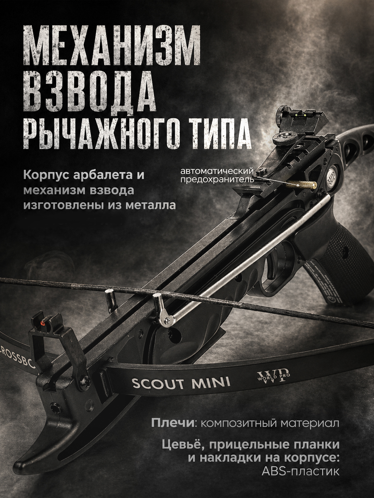
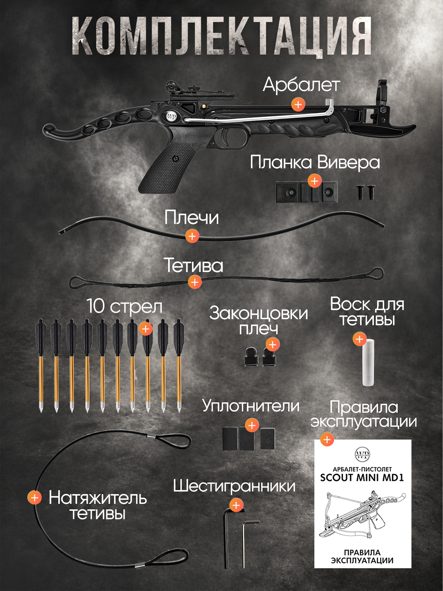

Compact outdoor crossbow
SCOUT MINI
Компактный арбалет-пистолет с металлическим корпусом, рычажным взводом и возможностью использования для боуфишинга.
900 г
80 lbs / 36 кг
до 50 м/с
20-25 м

Ключевые преимущества
Маленький формат, серьёзная инженерия
Металлический корпус
Жёсткая основа, матовое покрытие и ощущение цельного outdoor-инструмента.
Рычажный взвод
Механизм помогает подготовить изделие к тренировочному выстрелу без лишней суеты.
Планка Вивер
Открывает возможность поставить совместимые прицельные аксессуары.
Автоматический предохранитель
Встроенная система безопасности для более контролируемой эксплуатации.
Готов к маршруту, тренировке и подарку
Длина около 50 см и вес 900 г делают SCOUT MINI удобным для перевозки, хранения и выездов на природу.
Холодный металл, плотная сборка, уверенный хват
Корпус и механизм взвода выполнены из металла, а фактурная рукоять помогает удерживать изделие стабильно.
Механика, которую приятно чувствовать
Рычажная схема упрощает взвод и подчёркивает инженерный характер компактного формата.
Совместим с гарпунами и катушкой
SCOUT MINI можно использовать с подходящими гарпунами и катушкой для боуфишинга там, где это разрешено.




Характеристики
Параметры для точного понимания продукта
SCOUT MINI рассчитан на спортивную стрельбу, активный отдых и прикладные outdoor-сценарии с аккуратной, ответственной эксплуатацией.
- Вес
- 900 г
- Сила натяжения
- 80 lbs / 36 кг
- Скорость
- до 50 м/с
- Дальность
- 20-25 м
- Длина
- 50 см
- Ширина
- 44 см
- Высота
- 15 см
- Ход тетивы
- 14 см
- Корпус
- металл
- Планка
- Вивер
- Безопасность
- автопредохранитель
- Боуфишинг
- гарпуны и катушка
Комплектация
В коробке всё для первого знакомства
Комплект закрывает базовую сборку, обслуживание тетивы и настройку изделия.
Арбалет SCOUT MINI
Плечи
Тетива
10 стрел
Планка Вивера
Натяжитель тетивы
Воск для тетивы
Шестигранники
Уплотнители
Законцовки плеч
Правила эксплуатации
Галерея
Детали, металл и дымчатая подача


Видео
Посмотрите продукт в движении
Короткий cinematic-обзор для первого впечатления и большой обзор для детального изучения.
Металл, планка и механика без лишнего шума
Тёмная фурнитура, открытый прицел, планка Вивера и рычажный взвод собраны в компактный outdoor-формат.
Вивердля совместимой оптики
Металлкорпус и механизм взвода
Контрольавтоматический предохранитель
Безопасность
Спокойная эксплуатация начинается с правил
Только спорт и outdoor
Используйте изделие для спортивной стрельбы, тренировок и разрешённых сценариев.
Проверяйте направление
Перед запуском оцените дистанцию, цель и свободную зону вокруг неё.
Держите контроль
Не направляйте изделие на людей, животных и неподходящие объекты.
Безопасное хранение
Храните SCOUT MINI и стрелы отдельно, вне доступа детей.
Местные правила
Учитывайте правила перевозки, использования и аксессуаров для боуфишинга.
FAQ
Коротко о главном
Какая прицельная дальность?
Ориентир - 20-25 м при корректной сборке, подходящих стрелах и безопасной тренировочной зоне.
Насколько он компактный?
Вес около 900 г, длина около 50 см. Формат рассчитан на удобную перевозку и хранение.
Зачем рычажный взвод?
Он делает подготовку более контролируемой и подчёркивает инженерную механику модели.
Можно ли использовать для боуфишинга?
Да, модель совместима с подходящими гарпунами и катушкой для разрешённых сценариев боуфишинга.
Что входит в комплект?
SCOUT MINI, плечи, тетива, 10 стрел, планка Вивера, натяжитель, воск, ключи и инструкция.
Есть ли предохранитель?
Да, предусмотрен автоматический предохранитель. Его важно использовать вместе с базовыми правилами безопасности.
Заявка
Получите предложение по SCOUT MINI
Оставьте контакт, если хотите уточнить наличие, комплектацию, условия покупки или совместимые аксессуары для outdoor-сценариев.
Наличие
Комплектация
Аксессуары